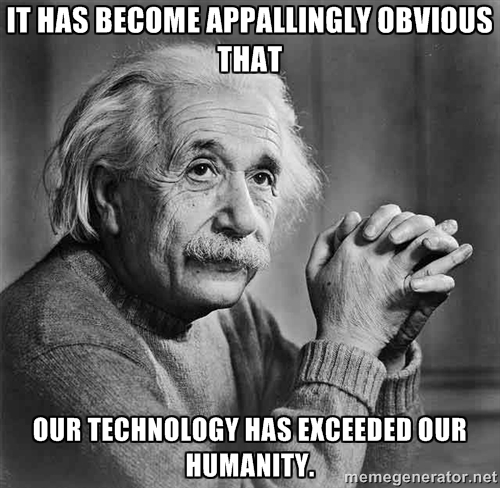

Introduction
The era of new media, media art, or digital art has been characterized by the importance of the way we send and receive messages, over the message itself. Looking at satellite television for example, the audience of new media, then tweets and retweets about the show they watched. In doing so, we comment, create memes, thus becoming information producers using the various affordances of technology. Society also develops new digital languages, for example, the language of emojis. These societal developments further influence the new trajectories to be taken by the technologies developed for these societies.
Borrowing from McLuhan’s theory we can deduce that any medium can cross the boundaries of its own content regardless of the conventions of that content. This has a direct effect to the audience who reads the medium. This cements McLuhan’s argument that the media is fast becoming an extension of humanity. (Levine and McLuhan, 1964).
Extension of humanity.
Borrowing from this theory, I concur that in the wake of the internet, exchange of products and services have been intensified and enhanced. Making the actual use of the internet an extension of humanity.
This raises questions about technological determinism. This is a theory that pursues an argument on the relationship between society and technology (Chandler, 2000). It is a reductionist theory that argues that technology shapes and propels our society’s social and cultural ecosystem as well as our history.
Looking at the medium as a message, makes other forms of media and their characteristics obsolete. For example, the rise of mobile technology enhanced interpersonal communication, and that was the death of the phone booth along with privacy and anonymity. (Euchner, 2016).
The internet has also become a platform of collaboration, dethroning the glamour of mass production. Looking at twitter as an example,the platform as a medium allows for retweets, and tweets, which can be regarded as authorship and co-authorship.
Conclusion
Questions arise whether mass production can still be regarded as the main source of information. News headlines on SABC2 can a rise from a tweet trending during the day. On the other hand, a news headline on SABC2 can trend on tweeter, with nuanced engagements, covering a larger audience than the broadcast station.
Bibliography
Chandler, Daniel (2000). Technological or Media Determinism] Available at: https://www.scribd.com/doc/138409259/Technological-or-Media-Determinism-Daniel-Chandler
Euchner, J. (2016). The Medium is the Message. Research-Technology Management, 59(5), pp.9-11.
Levine, S. and McLuhan, M. (1964). Understanding Media: The Extensions of Man. American Quarterly, 16(4), p.646.